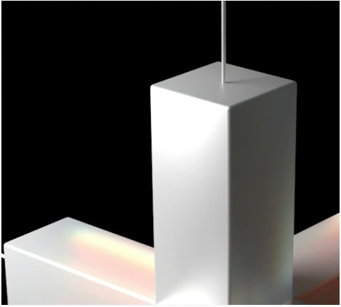
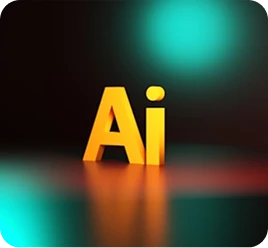

Application
Development
Digital experiences.
Scalable platforms.
Explore our capabilities
Explore our capabilities
Explore our capabilities
Explore our capabilities
Explore our capabilities
Explore our capabilities
STRATEGY. DESIGN. ENGINEERING.
Big ambitions deserve exceptional engineering.
We bring your digital future into focus.
THE SCALE BEHIND THE IDEAS
Built on expertise.
Trusted at scale.
Key offerings
From the first idea to the systems that power your business. Explore the expertise that moves you forward.
Digital experiences.
Scalable platforms.
Strategy, migration
and management.

Less friction.
More opportunity.
Turn information into
better decisions.

Bring intelligence
into your business.

Keep critical
operations moving.
PARTNERS WITH


02 /Our approach
01 / 04
Discover
Domain experts map the business, the data and the constraints before a line of code is written.

02 / 04
Architect
A genuine product engineering mindset means custom solutions, faster time to market and significantly less rework.

03 / 04
Engineer
Outcome-based projects for predictable cost and timelines, or agile pods for teams that need flexibility at speed.

04 / 04
Scale
AI/ML, cloud and data engineering applied where they deliver real business outcomes, at twice the impact of traditional providers.

Responsible AI
Ethical, secure, transparent and governed AI solutions designed for enterprise use.
Trust at every stage
GuardrailsHuman reviewAudit & monitoring
Bias mitigation and human oversight by design.
Delivered under ISO 27001 security controls.
Decisions that can be traced and explained.
Model monitoring from data to deployment.
TECHNOLOGY IS THE HOW. PEOPLE ARE THE WHY.
The future doesn’t
build itself.
We build it together.
Industries we service
Select an industry to see where we focus.

Engineering smarter financial experiences.
From trading and risk to lending platforms, we help turn complex workflows into intuitive digital experiences.

Connected experiences. From discovery to delivery.
Bring stores, digital channels and operations together to create a more seamless shopping experience.

Better technology. More human care.
Connect healthcare data and simplify critical workflows, supporting the people delivering care and advancing research.
Powering a more connected world.
Modernize the platforms behind connectivity, from network operations to the everyday experiences of your customers.

Build intelligence into every operation.
Connect production systems and operational data to help teams improve visibility, streamline processes and make informed decisions.

Clarity for a changing energy landscape.
Bring asset, market and operational data into focus with digital platforms built for complex energy and commodity workflows.
SOLUTIONS IN FOCUS
CERTIFICATIONS & RECOGNITION
Quality, security, and a culture that puts people first.


Blog & Insights
Perspectives from the people
engineering what’s next.
People of Wissen Technology
The people behind the possibilities. Shared ideas, shared celebrations, and room to grow.


Working hard and playing harder is what drives us, and we are always open to experimentation and innovation.Explore careers
YOUR NEXT CHAPTER STARTS HERE
Let’s buildBring your ambition.
We’ll bring the engineering.
Global presence
Invested in the growth and success of our clients and our people. Bringing engineering expertise to businesses around the world.
Connected across continents
08 countries